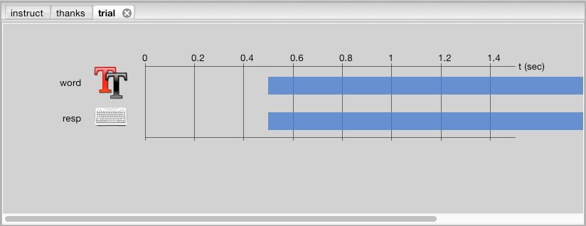
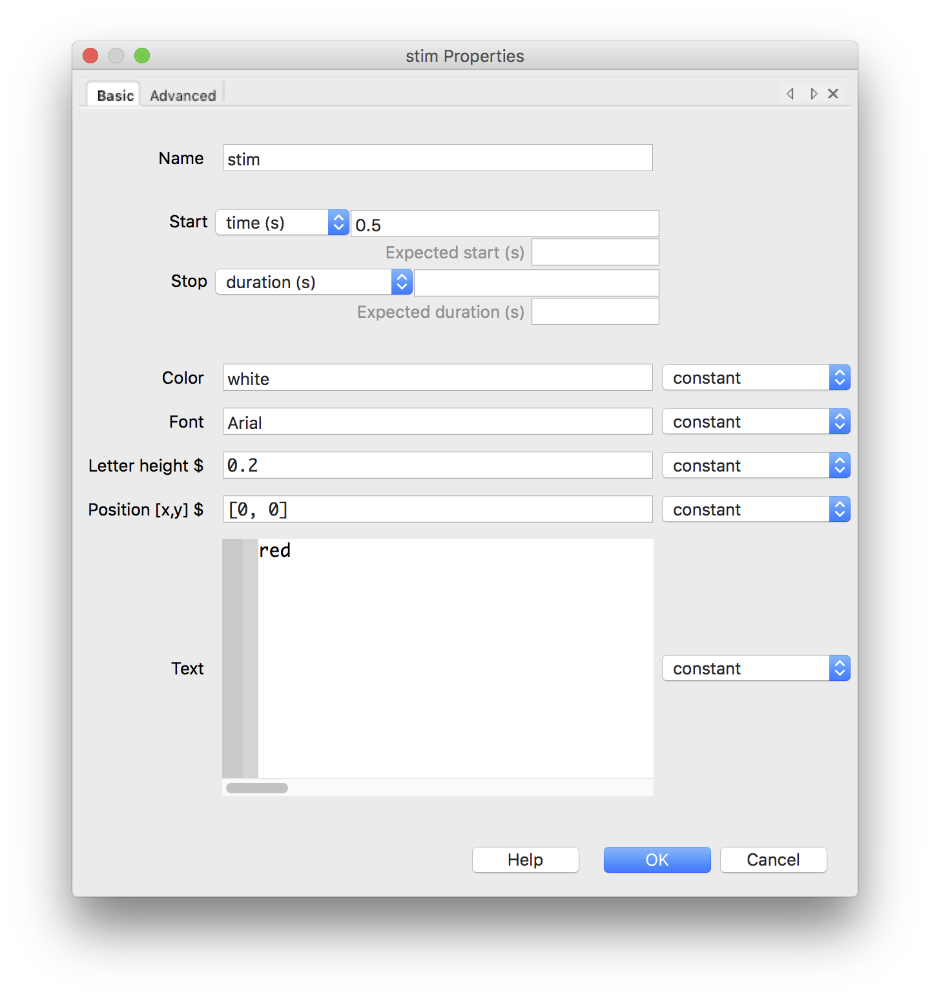
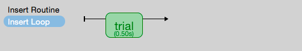
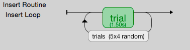

Overview
The Builder interface
An experiment in Builder has:
- a single Flow
- one or more Routines that are combined in the Flow
- several Components that are combined to form Routines
The Flow
This is really simply a flow diagram. It only specifies the order in which things occur and whether or not they repeat in a “Loop”.

The Flow (usually) doesn’t know how long things will last or what happens within them. It simply runs a Routine until that Routine has finished and then moves onto the next until the experiment finishes.
In the case of the Stroop task we have 3 Routines that run in turn and the ‘trial’ Routine is repeated a number of times in a loop.
Routines
These define how Components interact in time. They allow one or more stimuli to be displayed and responses to be collected at defined times relative to the start of the Routine.
A typical Routine would be a trial (present one or more stimuli and get a response) but it might be something else, like the presentation of instructions.
Also, a trial could be comprised of multiple Routines.
Routines
Let’s take a look at the trial Routine for the Stroop task.
The ‘trial’ Routine in the basic Stroop task. You can see there are just two thing comprising the trial, a Text Component and a Keyboard Component
Routines
You can see that the Routine has a time view, like a track editor for movie/audio editing software, so Components can be controlled independently in time. Maybe a fixation point would stay on for your entire trial but the stimulus would just appear for a short period.
In the Stroop demo the stimulus and keyboard both start at 0.5 s after the beginning of the Routine. They both last an indefinite duration (the time bar extends beyond the screen).
Components

There are many Components that could be added to a Routine. These are shown in the right-hand panel with different categories.
On the toolbar
The first few icons are probably obvious (New experiment, Open, Save, Undo, Redo).
With the others, if you hover you’ll get a tooltip telling you what they do.
The first two concern the overall application settings.

Alters the preferences for the application.

Control monitor calibrations and tell PsychoPy about sizes.
On the toolbar
The remaining 4 icons control the current experiment:

Changes settings about this experiment, such as whether it should run full-screen and what the opening dialog should contain.

The Builder is actually going to create a (slightly complicated) Python script. This button allows you to view the Python code that it will run.

Launch your current experiment.

Force-quit the running current experiment (without saving any data!)
Your first study
We’ll build the [Erikson] flanker task. The task involves a central target with irrelevant objects, that may or may not match the target, on either side. The question is whether the reaction time differs according to whether the flankers match.
Define your conditions
The first thing we need to do when creating a task is to set up the conditions. Think about what differs from one trial to the next:
- Do you need different filenames?
- Different “correct” answers?
- Different stimulus durations?
In the flanker task we basically need 4 trial variants:
< < < < < # left congruent
> > < > > # left incongruent
> > > > > # right congruent
< < > < < # right incongruent
Define your conditions
For now we’ll just use text characters as the stimuli, but they could be anything. We’ll do a version with images afterwards.
Open a spreadsheet application (e.g. MS Excel) and create this set of entries:
stim corrAns congr < < < < < left 1 > > < > > left 0 > > > > > right 1 < < > < < right 0
Define your conditions
In this table:
- The columns represent variables that we can refer to from PsychoPy
- The variable names need to be unique and with no punctuation (case-sensitive)
- The rows represent distinct trials (which we can randomise and repeat)
- In our case congr isn’t actually used by PsychoPy but it’s useful for analysis
Define your conditions
Create a folder on the computer where you’ll store the experiment.
Save your spreadsheet inside that folder as an Excel Workbook (.xlsx format), or comma-separated-value (.csv) file.
Define your trials
For the flanker task (as we’ve defined it) all we need is a single Text Component on each trial and a Keyboard Component for participants to respond.
Open the PsychoPy Builder view and make sure you have an empty (New) experiment.
Save it straight away in the folder you created. (This creates a .psyexp file)
Define your trials
We want about 0.5s inter-trial-intervals (ITI) so that participants don’t feel too rushed. To achieve that all we need to do is start the stimulus/response Components after a period at the beginning of the Routine.

Create a new Text Component by clicking the button on the right.
NB: The buttons on the right create new objects, but you can edit an existing object by clicking on its icon in the Routine. You can remove an object by right clicking its icon in the Routine.
Define your trials

Text dialog with contents for our stimulus
Define your trials
Note, we changed:
- the start time to 0.5 (seconds after Routine started)
- the stop (duration) could be shorter?
- the text became $stim where the name stim was one of our columns
- the text has been set to update every repeat (of the Routine)
NB: Start and stop can be defined in different ways (times, frames, conditions) and a duration/stop that is left blank will last indefinitely.
If you get an error message from your experiment that “stim is not defined” it means one of these things:
- you didn’t tell PsychoPy to “set every repeat”
- you have a typographical (e.g. capitals) error with your conditions file
- you haven’t told PsychoPy about your conditions file (like now)
Define your trials
To repeat trials (with variations as needed) we need to add a loop to your Flow.
Click ONCE on Add Loop in the FLow panel:
Then click the start and the end points for your loop (it doesn’t matter which you do first). If the is only one remaining valid place for your loop to go the other point will be added automatically.

Define your trials
When the start/end points are added a dialog will appear to allow you to control the settings.

NB: Later, you can click on the loop name to get this dialog back.
Define your trials
Press Browse… to find your conditions file, telling PsychoPy about each of your trials.

If you got your Excel file right then you’ll see a message telling you how many trial types and variables you created.
Press OK
Define your trials
Your Flow should now look something like this:
At this point you should be able to save your experiment and launch the “study”.
You’ll see a dialog appear asking for the name of the participant and the “session”.
When you run you should see different trials occuring. Press Escape anytime to quit (will save the data but not much will be in there).
Collecting responses
Believe it or not we’ve nearly finished!
All we really need now is to collect reaction times.
Add a Keyboard Component to your study with:
- start = 0.5 (seconds)
- end = <leave blank, meaning indefinite>
- allowed keys = ‘left’,’right’
- store correct = True
- correct = $corrAns
Collecting responses

For more information about the options you could press the help button.
Collecting responses
Your trial Routine should now look like this. Note the start times align at 0.5 but the keyboard option goes on forever. The trial only ends when a response is made in this study.

Add some instructions
- For instructions:
- create a new Routine called instructions
- insert that Routine into your Flow before the trials loop starts
Click on that Routine (either in the Flow or in the Routine tabs at the top) to edit that.
Add some instructions
- Add a text component to instructions Routine:
- name = instructText
- start = 0
- duration = <blank i.e. indefinite>
- text = <something useful here about the keys to press>
Because we made the text last forever we need to provide something to end the Routine or we’ll never get to the main experiment!
Add some instructions
- Add a keyboard component:
- name = endInstr
- save = nothing
- duration = <blank i.e. indefinite>
- forceEndRoutine = True
- allowedKeys = <blank i.e. any keys>
NB: make sure the duration is blank. If the keyboard stops being checked after 1 second then PsychoPy will never spot that the key has been pressed. The user will have to press Esc and quit the study.
Add a slide to say “thanks”
If an experiment suddenly ends after a trial but gives you no message people worry that they broke something.
Add a Routine like your instructions that says something like “Finished! Thanks for taking part.”
There isn’t much to read so you could just put the text up for 1 or 2 seconds and not bother using a keyboard to get rid of the message.
Changing your info dialog
In the Experiment Settings dialog you can alter the information you collect at the beginning, as well as a variety of other options.
We don’t care(?) about the “session” number for the participant so we could remove that row.
Do keep the `participant` setting (it gets used by default in creating the data filename).
You could add a row for gender? Is there anything else you want to be kept alongside the data?
NB: The order of the entries doesn’t matter (will be alphabetical anyway)
Changing your info dialog

Data options
The main file output is the trial-by-trial csv file (which opens in Excel).
Don’t bother about summarised formats and Excel (native) files. They don’t add information and can slow things down.
Do keep the log file and the psydat file. You might not need those but they’re a safety net in case things go wrong.
The format of the filename can be changed but that’s a little easy to break if you don’t know what you’re doing.
Analyse your data
- When we run the experiment PsychoPy will create a folder called data next to the .psyexp file. That will contain 3 files for each run of the study:
- log file (a text file). Lots of detail. Open in Excel or something like Notepad++
- psydat file (for doing analyses in Python scripts)
- csv file. For most analysis methods.
The csv file is a simple comma-separated text file. It can be opened in anything (R, SPSS, Excel…)
My computer is set to open this in Excel if I double-click
Analyse your data
- Open your data file in Excel and save as an Excel Workbook. This means that:
- Excel will not keep asking if you want to change the format
- you can add things like graphs and formulae and they will get saved
- if you mess up your analysis here the original file (csv) will still be there to go back to!
Analyse your data
Each row represents one trial, organised chronologically.
For this particular analysis all you would need to do is sort by whether the target/flankers were congruent (I told you that would be useful!) and then take the average reaction time of each type of trial.
The reaction time can be found in the resp.rt column. This measures the time (in secs) from the beginning of the keyboard being available (which we aligned with the stimulus onset).
That’s it! One study created, run and analysed!
References
| [Erikson] | Eriksen, B. A., Eriksen, C. W. (1974). Effects of noise letters upon identification of a target letter in a non- search task. Perception and Psychophysics 16: 143–149 |